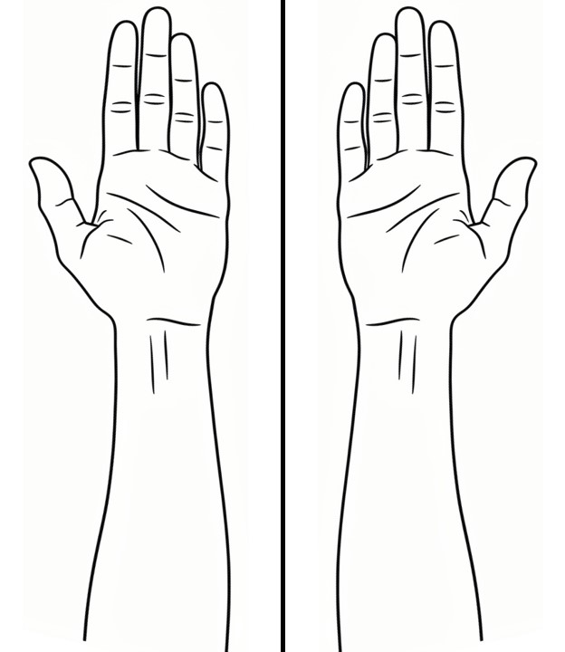

Overview
This page is under construction. It shows the two patterns used for vignette files: reading package data with system.file() and displaying a static image.
Using data shipped with the package
Files that code in the vignette needs to read live in inst/extdata/. Locate them with system.file(), which works during R CMD check, after installation, and in pkgdown.
dxf_path <- system.file("extdata", "LibreCAD_test_1.dxf", package = "paindrawr")
file.exists(dxf_path)
#> [1] TRUE
bg_path <- system.file("extdata", "bg_lower_arm_palmar.png", package = "paindrawr")
file.exists(bg_path)
#> [1] TRUEAn image from inst/extdata/ can also be read and plotted:
Inserting a static image
Screenshots and other images that are only displayed live in vignettes/articles/images/ and are included with knitr::include_graphics().
knitr::include_graphics("images/lower_arm_palmar.png")